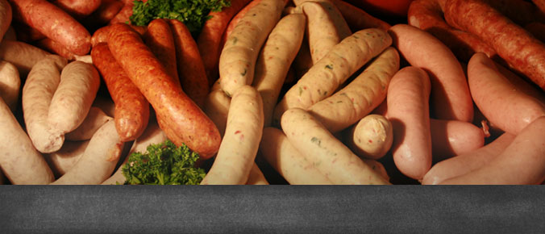
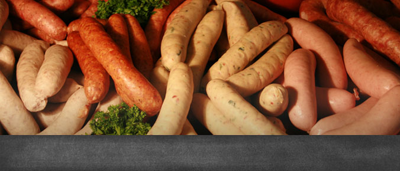

Imagine the smell of fresh baked bread, pastries, smoked sausages and stewed cabbage. For sixty years Kramarczuk’s has represented the quality and taste of Eastern European foods in Minneapolis and beyond… and it all started with a dream. In the late 1940s, Wasyl Kramarczuk and his wife Anna traveled from their beloved Ukraine to the United States in hopes of achieving the American dream, and after years of hard work, they founded Kramarczuk’s. Wasyl with his skills in sausage making, Anna with her skills in cooking and baking, and their idea of making the best possible products, created the Kramarczuk’s that today is considered a Minneapolis Landmark. The same standards of quality and authenticity Wasyl and Anna implemented years ago are still woven into every product we create at Kramarczuk’s. Every sausage, every loaf of bread, and every piroshky is still made by hand from scratch, with quality ingredients sourced locally whenever possible. In fact, the incorporation of quality and tradition in every product we sell is not only the standard; it has become a promise to our customers.

 
